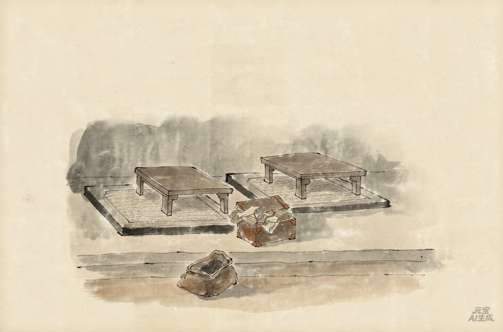
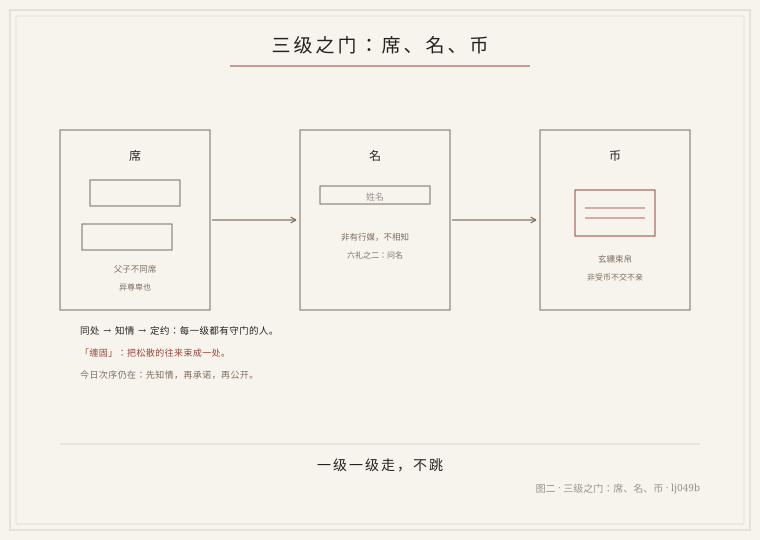

曲礼上 · 一·五十一 · 第 49 课
父子不同席。男女没有媒人往来，彼此不知姓名；没有受币，不相交亲。三句排列得很整齐：先是坐处，再是姓名，最后是礼币——由近及远，一层比一层重。
说什么事：父子不同席。男女非有行媒，不相知名；非受币，不交不亲。
落在哪一层：教。上节讲婚姻的门，此节讲婚姻的序。
为何编在此位：一·五十讲「已嫁而反」的分寸，此节讲「未嫁之前」的次序；先有媒，后有币，后有亲。
【经】父子不同席。男女非有行媒，不相知名；非受幣，不交不親。
父子不同席 郑注：「异尊卑也。」——不是避嫌，是别尊卑：父尊子卑，虽亲不同席。
非有行媒，不相知名 郑注：「见媒往来传昏姻之言，乃相知姓名。」疏：「相知男女名者，先须媒氏行传昏姻之意，后乃知名……故《婚礼》有六礼，二曰问名。」
非受币，不交不亲 郑注：「重别有礼，乃相缠固。」疏：「币谓聘之玄纁束帛也。先须礼币，然后可交亲也。」
父子不同席。男女没有媒人往来，彼此不知姓名；没有受币，不相交亲。
三句是三级的门：席（同处）、名（知情）、币（定约）。每一级都有守门的人：父子之间守门的是「尊卑」，男女之间守门的是「媒」与「币」。
第一层 父子不同席：亲而别尊卑 注只四字「异尊卑也」。父子至亲，仍不同席；可见「同席」在礼里不是亲近的表示，而是「同列」的表示。父子不同列，故不同席。
第二层 媒：知名的前提 注说「见媒往来传昏姻之言，乃相知姓名」。姓名在礼里不是小事：知了名，才可以问；问了名，才算起了头。所以「不相知名」是保护，也是程序。
第三层 币：交亲的前提 疏把币落到「玄纁束帛」。注说「重别有礼，乃相缠固」——缠固，是把松散的往来束成一处。没有币，交亲就没有凭；有了凭，才有可守的界。
第四层 三级递进 父子不同席讲「同处」，媒讲「知情」，币讲「定约」。三句连读，正是把一桩婚事从「见面」推到「有凭」的全序。
与今日何干 今日无媒无币，但次序仍在：先知情，再承诺，再公开。跳过一级，后面每一级都要加倍补。
| 左 | 右 |
|---|---|
| 父子不同席 | 异尊卑也 |
| 非有行媒，不相知名 | 媒传昏姻之言，乃相知姓名 |
| 问名 | 六礼之二 |
| 非受币，不交不亲 | 币谓玄纁束帛 |
| 重别有礼 | 乃相缠固 |
| 三级 | 同处、知情、定约 |

